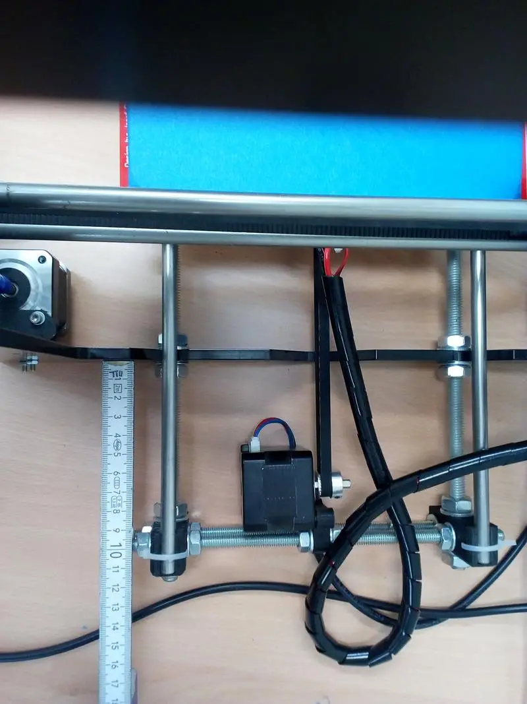

Fliehkraft: Pop-up makerspace in a residential project for people migrating to Germany from the middle east.
We occupied an unused room, deployed a pop-up makerspace, started building 3D printers and the camp staff and the residents were so curious and they decided that they liked the project so much that we were given a small project room and were invited to stay and continue collaborating together with residents for about a year.
Project Details
My intention was to connect the Berlin hacker and maker scene to the camp and open a space where people of all ages who were interested in electronics, computers, 3d printing, making, DIY and also alternative culture could come and chat and collaborate or just print something out. The best action I did at the camp right at the start was simply setting up a freifunk node / wireless access point and putting up some posters giving the residents of the camp free wifi.
In the words of my project partner and dear friend Thomas (who was working on site at the time as a social worker and has a background in Economics). DE: "Wir brauchen mehr Räume, an denen sich Menschen selbst basis ökonomisch bilden. Flüchtlingsunterkünfte können solche Räume sein." EN: "We need more spaces where people can educate themselves economically. Refugee shelters can be such spaces."
Image Gallery
First day, occupied an unused room and began building a Reprap! With a little help from my friends :)
First day, starting room
More build photos.
Even more build photos.
 The host organisation and the people at the camp support what we are doing so we got a lab room! Yipi!
The host organisation and the people at the camp support what we are doing so we got a lab room! Yipi!
Some nice wallart for our new project space!
A closeup on one of the first longer prints.

Measuring before I tighten the nuts against each other on the threaded rod.
Calibrating the newly built 3D printer.
2 working repraps and one final build well underway
The printers are working, printing buttons for little (useful) presents / giveaways.
Making a spool holder on one of the working printers.
Picking nettle leaves (without getting stung)— in Marzahn, Berlin, Germany.
Taking walks in the local neighbourhood with friends from the camp identifying and harvesting local edible and medicinal plants. Clockwise from top: Stinging Nettle, Rocket, Sorrel, St John's Wort, Borage-Family (Viper's bugloss / Echium vulgare), Large-leaved Lime flowers (commonly known as Linden in Germany), Ribwort Plantain— in Marzahn, Berlin, Germany.
We made a salad with wild Rucola, Sauerampfer, Rose petals, a few borage flowers, Spitzwegerich and Nettle (and a little bit cucumber from the supermarket)
Eating together with friends from the camp: curry, home-baked bread and hand-picked wild salad— in Marzahn, Berlin, Germany.